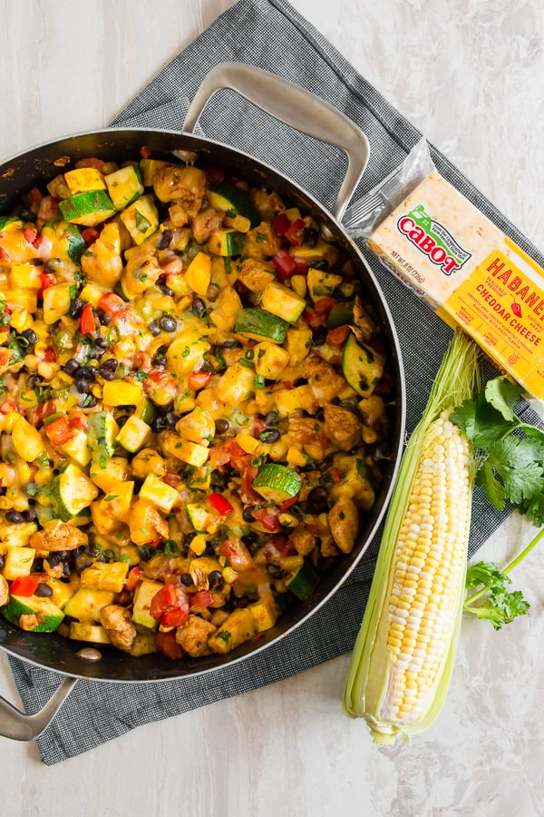

<!DOCTYPE html> 
<html lang="en"></html>

<head>
    <meta charset="UTF-8">
    <title>TEXMEX Chicken!</title>
</head>

<body>
    <h1>TEXMEX Chicken!</h1>
    
    
    <h2>Description</h2>
    <p>The TEXMEX chicken is healthy and everything is cooked in one skillet. Once again, this is a decent recipe that is easy to make.</p>

    <h2>Ingredients</h2>
    <p><ul>
    <li>16oz chicken</li>
    <li>2 zucchini diced</li>
    <li>1 cup fresh or frozen corn</li> 
    <li>1 can (14oz)  drained and rinsed black beans</li> 
    <li>1 can (14oz) Diced tomatoes</li>
    <li>1 onion</li> 
    <li>1 bell pepper</li> 
    <li>Garlic to taste</li>
    <li>1 Tbs cumin</li>
    <li>2 tsp taco seasoning</li> 
    <li>Cilantro, salt and pepper to taste</li></ul> 
    </p>


    <h2>Steps</h2>
    <p><ol>
    <li>Sautee down onion, bell pepper and garlic until translucent</li>
    <li>Add chicken breast to one side of the pan and season with half the cumin, salt and pepper</li>
    <li>Once chicken is almost cooked, add in your zucchini, corn, beans, diced tomatoes, taco seasoning, remaining cumin and salt and pepper</li>
    <li>Mix everything until evenly combined then let simmer for 10-15 minutes</li>
    <li>Top with tex mex cheese and broil in the oven until gliden brown</li>
    <li>Add cilantro on top!</li></ol>
    </p>

    <h2>YouTube</h2>
    <a href="https://www.youtube.com/watch?v=CBhRhbxDm6w">TEXMEX Chicken! -Will Tennyson (skip to 12:16)</a>

</body>